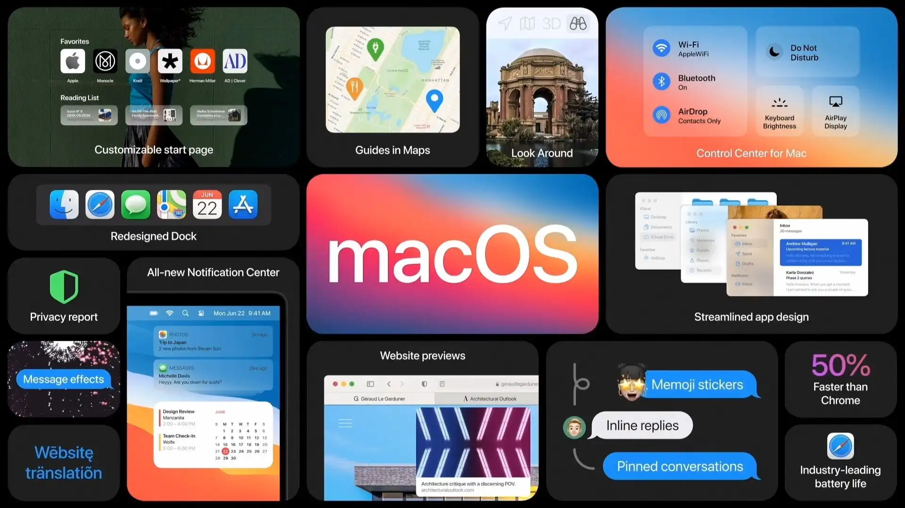
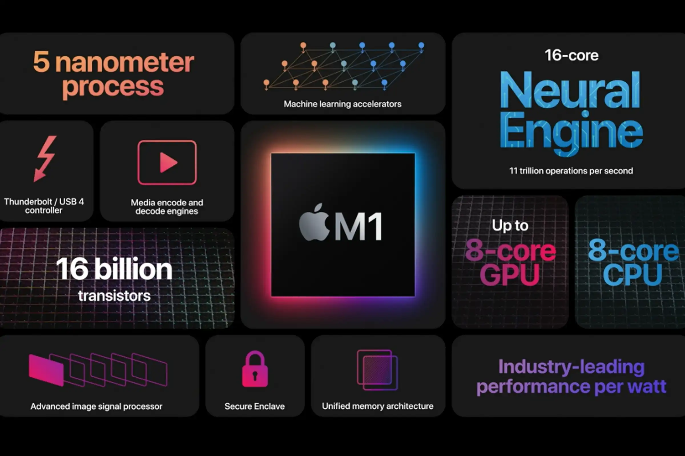
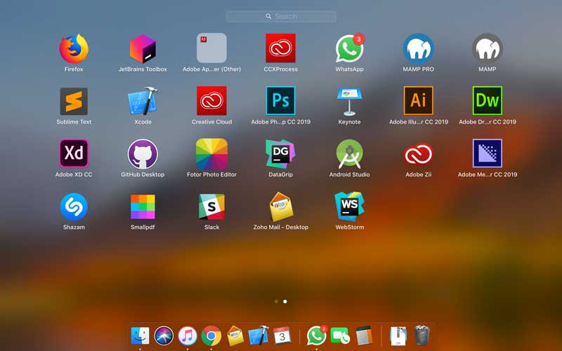

TRIZ (Teoriya Inventiv Problemalar Yechimi - Teoria Resheniya Izobretatelskyh Zadach) - bu Genrikh Altshullero'z tomonidan 1950-yillar boshida ishlab chiqilgan ijodiy muammolarni hal qilishning sistemali metodologiyasi.

TRIZ ning asosiy g'oyasi: Muammolarni hal qilishning eng yaxshi usullari tarixan o'nlab minglab patent va ijodiy yechimlardan ekstraktiv xulosa qilib olindi. Bu yechimlarni tizimli tarzda aniqlash va qo'llash ta'lim va amaliyotda juda foydali.
TRIZ Tarixchasi:
1950-lar: Genrikh Altshullero'z patent analizi boshladi
1960-lar: 40 ta prinsip formulalashtirildi
1970-lar: Paradoks matritsa va qo'shimcha metodlar ishlab chiqildi
1980-lar: TRIZ dunyoga tarqalmabeoshla boshladi
2000-lar: Ta'lim va ijodiy tafakkurni rivojlantirishda qo'llanilmay boshlandi
2-dars: TRIZ ning Asosiy Tamoyillari
TRIZ metodologiyasi bir nechta asosiy tamoyillarga asoslangan, bular muammoni hal qilishning fundamental prinsiplari.

1. Idealliligi Prinsipi
Har bir sistema ideal holga intilishi kerak. Ideal sistema - bu zaxiralar yo'q bo'lganda maksimal natija beradigan sistema. Pedagogik misol: O'quv jarayoni "o'zini o'zi" barpa bo'ladigan darajada ideal bo'lsa, o'qituvchi faqat nazorat qilsa bo'ladi.
2. Qarama-qarshiliklari Prinsipi
Muammolar asosan qarama-qarshi talablardan tug'iladi. Masalan, dars chuqur bo'lishi kerak lekin vaqt chegaralangan. Buning yechimi TRIZ prinsiplarini qo'llashdir.
3. Resurs Prinsipi
Har bir tizimda muammoni hal qilishning resurslar mavjud. Bu resurslar ko'pincha noto'g'ri qo'llanib qolgan. Pedagogik misol: O'quvchilarning ijodiy potensiali - bu noyob resurs bo'lib, agar uni to'g'ri faollashtirsa, ta'lim natijasi yaxshi bo'ladi.
4. Dinamika Prinsipi
Tizimning har bir qismi o'zgaruvchan bo'lishi kerak. O'qitish metodikasi, o'quvchi tarkibi, ta'lim sharoitlari - hammasi dinamik, statik emas.
5. Evolventsiya (Taraqqiyot) Prinsipi
Tizimlar taraqqiyotning belgilangan qonunlari asosida rivojlanadi. Pedagogik tizim ham o'z taraqqiyot yo'lida harakat qiladi va bu yo'l bashorat qilish mumkin.
3-dars: Ideallik Parametri va Uning Hisoblash
Ideallik = Foydali funksiya / Zararli ta'sir
Sistem yaxshi bo'lishi uchun numerator (foydali funksiya) ko'payishi va yoki denominator (zararli ta'sir) kamayishi kerak.
Misol: O'quv Dars
Foydali funksiya: Bitta saatda berilgan tushunchalar soni
Zararli ta'sir: O'quvchi charchoq darajasi, e'tibor yo'talishi
Ideal yechim: Tushunchalar sonini oshirib, charchoqni kamaytirish
Menu Bar ekranning yuqori qismida joylashgan bo'lib, tizim va dasturiy menyularni o'z ichiga oladi. Menu Bar orqali foydalanuvchilar tizim sozlamalarini boshqarish va dasturlarni boshqarishlari mumkin.
Finder
Finder — bu macOSdagi fayllar va papkalar bilan ishlash uchun mo'ljallangan dastur. Finder orqali foydalanuvchilar fayllarni ko'rish, tahrirlash, ko'chirish va o'chirish imkoniyatiga ega. Finder interfeysi oddiy va intuitiv bo'lib, foydalanuvchilarga kerakli fayllarni tezda topish imkonini beradi.
System Preferences
System Preferences — bu macOSning asosiy sozlamalar paneli bo'lib, bu yerda foydalanuvchilar tizim sozlamalarini boshqarishlari mumkin. System Preferences orqali foydalanuvchilar tarmoq, xavfsizlik, foydalanuvchi hisoblari va boshqa ko'plab parametrlarni boshqarishlari mumkin.
Notification Center
Notification Center — bu foydalanuvchilarga tizim xabarlari va bildirishnomalarini ko'rsatadigan panel. Notification Center orqali foydalanuvchilar muhim xabarnomalarni ko'rib chiqish va ularga tezda javob berish imkoniyatiga ega.
macOS foydalanuvchi interfeysi qulay va samarali ishlashni ta'minlash uchun mo'ljallangan. Dock, Menu Bar, Finder, System Preferences va Notification Center kabi asosiy komponentlari foydalanuvchilarga tizimni boshqarish va kundalik vazifalarni bajarish imkoniyatlarini taqdim etadi. Ushbu elementlarning barchasi macOS operatsion tizimining foydalanish uchun qulay va samarali ekanligini ta'minlaydi.
4-mavzu: macOS Dasturlarini Boshqarish
macOS operatsion tizimida dasturlarni boshqarish qulay va samarali funksiyalardan biridir. Quyida macOS tizimida dasturlarni boshqarishning asosiy usullari haqida ma'lumotlar keltirilgan:

Activity Monitor (Faollik monitori)
Activity Monitor — bu foydalanuvchilarga faol dasturlarni, jarayonlarni va tizim resurslaridan foydalanishni ko'rsatadigan qulay vositadir. Activity Monitor yordamida foydalanuvchilar dasturlarni to'xtatish, jarayonlarni tugatish va resurslar taqsimotini kuzatish imkoniyatiga ega.
System Preferences (Tizim sozlamalari)
System Preferences — bu macOSning asosiy sozlamalar paneli bo'lib, bu yerda foydalanuvchilar dasturlarni o'rnatish yoki olib tashlash, foydalanuvchi hisoblarini boshqarish va tizim xavfsizlik sozlamalarini o'zgartirishlari mumkin.
Launchpad
Launchpad — bu macOSda o'rnatilgan barcha dasturlarni ko'rsatadigan interfeys bo'lib, iOS uslubida dasturlarni ishga tushirish va boshqarish imkonini beradi. Launchpad orqali foydalanuvchilar dasturlarni tezda ochish va tartibga solish imkoniyatiga ega.
Applications Folder (Ilovalar papkasi)
Applications Folder — bu macOS tizimida o'rnatilgan barcha dasturlarni o'z ichiga olgan papka. Bu papka orqali foydalanuvchilar dasturlarni ko'rish, ochish va olib tashlash imkoniyatiga ega.
Mac App Store
Mac App Store — bu Apple tomonidan taqdim etilgan rasmiy dasturlar do'koni. Bu do'konda foydalanuvchilar turli xil dasturlarni yuklab olishlari va o'rnatishlari mumkin. Mac App Store orqali dasturlarni avtomatik yangilash ham amalga oshiriladi.
macOS operatsion tizimi dasturlarni boshqarishning bir necha qulay usullarini taqdim etadi. Activity Monitor, System Preferences, Launchpad, Applications Folder va Mac App Store kabi vositalar orqali foydalanuvchilar dasturlarni o'rnatish, olib tashlash, yangilash va boshqarish imkoniyatiga ega. Bu vositalar macOS tizimini samarali va qulay boshqarishni ta'minlaydi.
5-mavzu: macOS Xavfsizligi
macOS operatsion tizimi foydalanuvchi ma'lumotlarini va tizim resurslarini himoya qilish uchun keng ko'lamli xavfsizlik funksiyalarini taqdim etadi. Quyida macOS xavfsizligini ta'minlashning asosiy elementlari haqida batafsil ma'lumot berilgan:
Gatekeeper
Gatekeeper — bu macOSning dastur xavfsizligini ta'minlash uchun mo'ljallangan vosita. Gatekeeper dasturlarni faqat ruxsat berilgan manbalardan yuklash va o'rnatishga imkon beradi. Bu vosita foydalanuvchilarni zararli dasturlardan himoya qiladi.
Xprotect
Xprotect — bu macOSning ichki antivirus tizimi bo'lib, zararli dasturlarni aniqlash va bloklash uchun foydalaniladi. Xprotect yangilanishlari avtomatik ravishda o'rnatiladi va tizimni yangi tahdidlardan himoya qiladi.
FileVault
FileVault — bu macOSdagi shifrlash vositasi bo'lib, foydalanuvchi ma'lumotlarini shifrlash va himoya qilish uchun mo'ljallangan. FileVault yordamida foydalanuvchilar o'z ma'lumotlarini shifrlab, ruxsatsiz kirishlardan himoya qilishlari mumkin.
Firewall (Olov devori)
macOS Firewall tizimni tashqi tarmoqdan keladigan tahdidlardan himoya qiladi. U kiruvchi va chiquvchi tarmoq trafikini nazorat qiladi va xavfsizlik siyosatiga asoslangan ravishda ruxsat berilgan yoki taqiqlangan trafikni belgilaydi. macOS Firewall foydalanuvchilarga qo'shimcha xavfsizlik qoidalarini sozlash imkonini beradi.
System Integrity Protection (SIP)
System Integrity Protection (SIP) — bu macOSning tizim yaxlitligini himoya qilish uchun mo'ljallangan xavfsizlik funksiyasi. SIP tizim fayllari va papkalarini ruxsatsiz o'zgartirishlardan himoya qiladi va bu orqali tizimning barqarorligini ta'minlaydi.
macOS operatsion tizimi xavfsizlikni ta'minlash uchun bir qator vositalarni taqdim etadi. Gatekeeper, Xprotect, FileVault, Firewall va System Integrity Protection kabi vositalar orqali tizimni va foydalanuvchi ma'lumotlarini himoya qilish mumkin. Bu vositalar macOS foydalanuvchilari uchun xavfsiz va ishonchli muhit yaratadi.